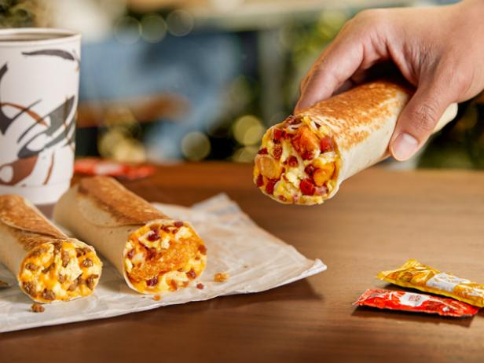

location: your kitchen
time: 6:15 a.m.
Hooray!!! you are one step closer to having a balanced diet. Afterall, breakfast is the most important meal of the day. Now... what should you make for breakfast? Click on the images.
Let's make a green acai bowl topped with some chia seeds, flax seeds, pumpkin seeds, homemade granola,sliced banana, strawberries, blueberries, and some honey. Let's also toast a whole grain bread and top it with lightly seasoned avacado. YUM~
Actually...I'm kind of lazy. Let's just get some drive-thru breakfast at a fast food restaurant.